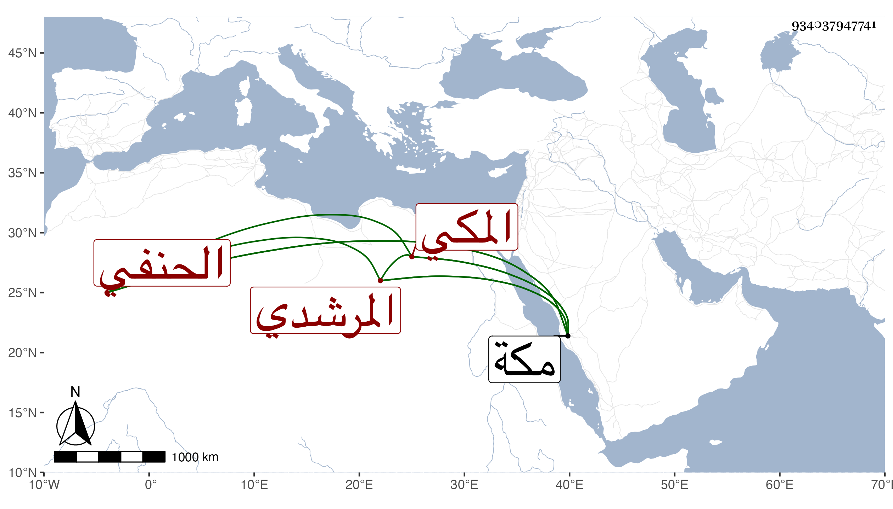

0902Sakhawi.DawLamic.ITO20230111-ara1.EIS1600.934037947741
Biography ID: 934037947741
إبراهيم بن عبد الواحد بن إبراهيم بن أحمد بن أبي بكر بن عبد الوهاب البرهان بن الجلال المرشدي المكي الحنفي والد عبد الواحد . ولد في يوم الثلاثاء منتصف صفر سنة تسع عشرة وثمان مائة بمكة وحفظ القرآن والقدوري واشتغل على أبيه بل سمع على عمه النسك الكبير لابن جماعة . مات في ظهر يوم الجمعة عاشر صفر سنة سبع وسبعين بمكة . أرخه ابن فهد .
